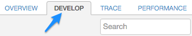
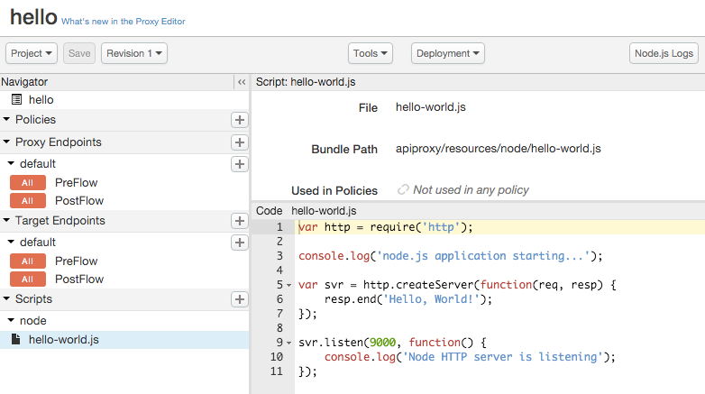
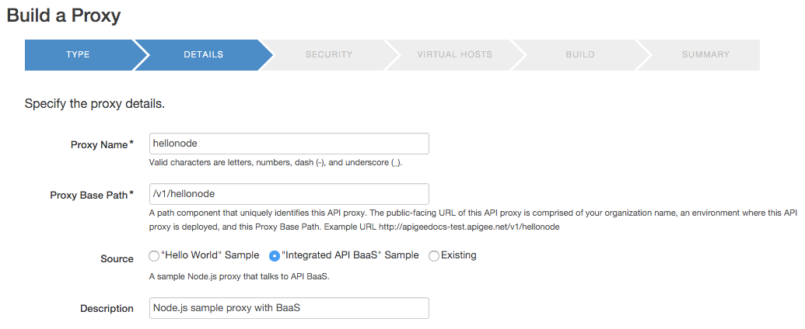

[toc]
This topic explains the simplest way to wrap a Node.js application in an API proxy using the management UI.
Chances are, the first Node.js app you ever created was an HTTP server that responds to requests with "Hello World!" The simplest way to try out Node.js on Apigee Edge is to do something very similar. With just a few mouse clicks, you'll have a functioning, proxied Node.js HTTP server running on Edge. After that, you can use the code editor in the UI to modify the Node.js app, add additional Node.js files, add policies, and so on.
Video: For a quick "how to" lesson on creating Node.js proxies in Edge, check out this short presentation from the Four Minute Video For Developers (4MV4D) series
If you have not done so, you need to set up an account on Apigee Edge before you can try out this example.
| Field | Description |
|---|---|
| Details | |
| Proxy Name | The name displayed for your API. Enter Hello. |
| Proxy Base Path | If you specified Hello as the display name, then the path /hello is populated automatically. We recommend you add a version number to the path: /v1/hello |
| Source | Select "Hello World" Sample. (We'll discuss the other options later in this topic.) |
| Description | The description of the API. |
| Security | |
| Pass through (none) | Select this if you do not wish to add security to the proxy. |
| API Key | Adds API key-based authentication to your API proxy. When this option is selected, the Impose Quota per Developer option becomes selectable. |
| OAuth 2.0 | Adds OAuth 2.0 based authentication to your API proxy. When this option is selected, the Impose Quota per Developer option becomes selectable. |
| Impose Quota per Developer | Adds a policy that limits the number of request messages that can be submitted to your API proxy by an individual app over an interval of time. |
| Publish API Product | When you select the Secure with API Keys option, the Publish API Product option is automatically selected. For the purposes of this tutorial, be sure to clear this option. |
| Add CORS headers | Enables CORS (cross-origin resource sharing) to allow a browser to make direct requests to another domain. |
| Virtual Hosts | |
| default, secure | To learn about virtual hosts, see http://docs.apigee.com/node/15126. |
| Build | |
| Deploy Environments | Select the environments you wish to deploy to, and review your proxy details. |
hello proxy, the Node.js application executes automatically, responding with "Hello, World!". Note that unless you specified otherwise, the Node.js application is deployed to the environment called test. Here's the basic call using Curl (substitute your organization name for myorg).
$ curl http://myorg-test.apigee.net/v1/hello
Hello, World!
Let's look at the Node.js code that was added to the API proxy. Go to the summary page for the Hello World proxy and click Develop.

This opens the Develop view which includes a code editor. You can edit the code there directly.

For example, change the response from Hello, World! to something else, like Hello, Node!, then click Save. The proxy is saved and redeployed.
Finally, re-invoke the proxy to verify the change:
$ curl http://myorg-test.apigee.net/v1/hello
Hello, Node!
Now that you've seen the Hello World sample, let's briefly look at the other out-of-the-box selection: the Integrated API BaaS sample.
The basic steps for creating and invoking this sample are the same as the Hello World! sample. The API BaaS sample is a little more complex, however.
The Integrated API BaaS sample integrates two Node.js frameworks to create a simple API service. One API call simply returns a string embedded in the code, and the other retrieves data from an external service and returns that data in the response.
The frameworks used in this sample are Express and Argo. Both are web application frameworks. Express is a web application framework that is very popular among Node.js developers. Argo is another web application framework that is an open source project sponsored by Apigee.
To create this sample proxy:

Here is the source code that is deployed with this proxy:
var argo = require('argo');
var express = require('express');
var app = express();
var proxy = argo()
.target('https://api.usergrid.com')
.build();
app.get('/hello', function(req, res) {
res.send('Hello from Express');
});
app.all('*', proxy.run);
app.listen(3000);
In this code, Express is used to specify the GET call, which simply sends back text when the API is called with /hello. The Argo method executes as well. It returns data from the site https://api.usergrid.com. The build() method prepares Argo's request event listener. The listener is currently accessible by calling the run method on the object returned from the build method.
If you call this proxy with the /hello path, it returns "Hello from Express!":
$ curl http://myorg-test.apigee.net/v1/hellonode
Hello from Express!
If you call this proxy without /hello, it runs the argo proxy, which grabs information from the api.usergrid.com site:
$ curl http://myorg-test.apigee.net/v1/data-service
You can read more about the Argo framework at its repository in GitHub.
Like all Node.js applications, Node.js applications running on Apigee Edge run in a single thread of control. There is no need (and in fact no ability) to start another thread, or synchronize variables between threads. Since Node.js enforces non-blocking programming, a single script can support thousands of concurrent requests because the script gives up the CPU whenever it has to wait for something, and it is notified later when it happens.
To use Node.js on Apigee Edge, you need to specify a main Node.js script file. This script must be configured to handle incoming requests, which you typically do by using the http or https modules, creating a client, and so on. (If the main script is not configured this way, it will simply execute and exit after it is deployed.) Within Apigee Edge, each Node.js application script is started from the beginning when the proxy is deployed, and stopped when the proxy is undeployed. In between it will wait for new requests and process them. For more information, see "Invoking an imported Node.js file" in http://docs.apigee.com/node/14936.
You can also create and deploy standalone Node.js applications directly from your file system. The next topic, http://docs.apigee.com/node/14936, explains how to use the apigeetool command to deploy a Node.js app from the command line.